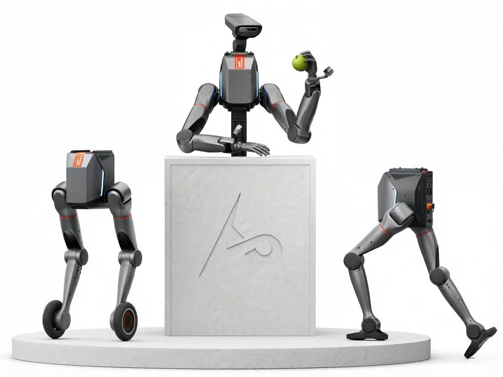

UMANOIDI · LIMX DYNAMICS
LimX TRON 2 EDU è una piattaforma per la ricerca su embodied AI: un solo sistema, tre forme configurabili, che unisce manipolazione a due braccia e locomozione su ruote o su suola. Abra Robotics la consegna in Italia con configurazione, formazione e assistenza.
Scheda tecnica
Applicazioni
Il produttore descrive una piattaforma con raccolta dati nativa, addestramento e inferenza, tutorial su modelli come ACT e Pi0.5 e supporto a dataset reali aperti.
Con doppio braccio e base a ruote o a suola si studiano compiti in cui il robot si sposta e manipola, per esempio interruttori, pulsanti di ascensore e ripiani a media altezza.
La teleoperazione bimanuale con visore VR e la protezione dei confini di lavoro permettono di raccogliere dati di imitazione in sicurezza.
Con il kit di percezione opzionale e il kit di mobile manipulation autonoma la piattaforma copre mappatura 3D, localizzazione e navigazione, per esempio in corridoi di edifici e passaggi industriali.
TRON 2 non è un umanoide: è una base mobile a ruote o gambe con due braccia a 7 DoF, adatta a mobile manipulation. Se ti servono mani, busto e camminata umana, Unitree G1 e H2 sono più vicini a quell'obiettivo; se il compito è muoversi e manipolare, TRON 2 è da valutare.
Domande frequenti
Il prezzo è su richiesta, perché cambia in base alla configurazione (WS, DA o WSD) e ai kit scelti. Il preventivo arriva in 24 ore lavorative.
WS ha ruote e suola, DA ha il doppio braccio, WSD li ha entrambi. La scelta dipende da cosa devi studiare: sola mobilità, sola manipolazione o entrambe insieme.
Il produttore indica circa 2 settimane di consegna, a cui si aggiunge la spedizione in Italia. Abra gestisce consegna, configurazione, formazione e assistenza.
Python e C++, ROS 1 e ROS 2, con SDK, piattaforma Studio, simulatore ed esempi di algoritmi. Sono disponibili URDF e supporto per Isaac Sim, MuJoCo e Gazebo.
La conformità per l'uso previsto si verifica con Abra prima dell'ordine: dicci l'applicazione e il luogo di impiego e te la confermiamo per iscritto.
Contatti
Rispondiamo entro 24 ore lavorative con prezzo, tempi di consegna in Italia e configurazione consigliata.